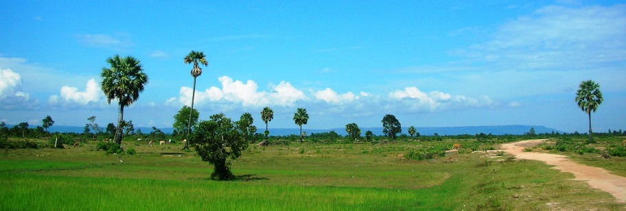

កំណើតនៃអាណាចក្រ
នៅលើភ្នំពិសិដ្ឋគូលែន ព្រះបាទជយវម៌្មទី ២ ត្រូវបានរាជាភិសេកជាស្តេចចក្រវាទ្នី — អាណាចក្រខ្មែរចាប់កំណើត។
ភ្នំគូលែន
នៅឆ្នាំ ៨០២ នៅលើកំពូលភ្នំគូលែន — ភ្នំមហេន្ទ្រ — ព្រះបាទជយវម៌្មទី ២ បានធ្វើពិធីរាជាភិសេកជាស្តេចចក្រវាទ្នី គឺ «ស្តេចសកលលោក»។ ពិធីនេះបានកាត់ផ្តាច់ទំនាក់ទំនងជាមួយអំណាចជ្វា/ស្រីវិជ័យ ហើយបង្រួបបង្រួមខ្មែរទាំងអស់ឲ្យស្ថិតក្រោមអំណាចតែមួយ។
ភ្នំគូលែន មិនមែនគ្រាន់តែជាភ្នំធម្មតាទេ៖ វាជាភ្នំពិសិដ្ឋ ជាកន្លែងដែលផ្ទៃមេឃប៉ះផែនដី។ ការជ្រើសរើសទីតាំងនេះ បង្ហាញពីជំនឿដ៏ជ្រាលជ្រៅលើភ្នំជាលំនៅរបស់ទេវតា — ជំនឿដែលនឹងក្លាយជាមូលដ្ឋាននៃស្ថាបត្យកម្មប្រាសាទភ្នំទាំងអស់នៅអង្គរ។
ទេវរាជ
ជាមួយនឹងការរាជាភិសេកនេះ ការគោរព «ទេវរាជ» ក៏ត្រូវបានបង្កើតឡើង — ជំនឿថាស្តេចជាតំណាងព្រះនៅលើផែនដី។ ស្តេចមិនមែនគ្រាន់តែជាអ្នកគ្រប់គ្រងទេ ប៉ុន្តែជាអ្នកធានាសណ្តាប់ធ្នាប់លោកធាតុទាំងមូល។
ជំនឿនេះពន្យល់ពីមូលហេតុដែលស្តេចអង្គរជំនាន់ក្រោយៗ សាងសង់ប្រាសាទភ្នំយក្សៗ៖ ប្រាសាទនីមួយៗជារូបចម្លងភ្នំព្រះសុមេរុ ជាកន្លែងដែលស្តេចនឹងរួបរួមជាមួយព្រះបន្ទាប់ពីសោយទិវង្គត។
អាណាចក្រ ៦២៩ ឆ្នាំ
ពីពិធីរាជាភិសេកនៅភ្នំគូលែន អាណាចក្រខ្មែរបានរីកចម្រើនអស់រយៈពេល ៦២៩ ឆ្នាំ — ជាអាណាចក្រយូរអង្វែងជាងគេបំផុតមួយក្នុងប្រវត្តិសាស្ត្រពិភពលោក — គ្រប់គ្រងលើផ្ទៃដីដ៏ធំនៃអាស៊ីអាគ្នេយ៍ដីគោក។
នៅក្នុងរយៈពេលនោះ ខ្មែរនឹងកសាងទីក្រុងធំជាងគេបំផុតក្នុងពិភពលោកមុនសម័យឧស្សាហកម្ម ប្រាសាទធំជាងគេបំផុតនៅលើផែនដី និងប្រព័ន្ធធារាសាស្ត្រដ៏អស្ចារ្យដែលផ្គត់ផ្គង់ប្រជាជនប្រហែលមួយលាននាក់។